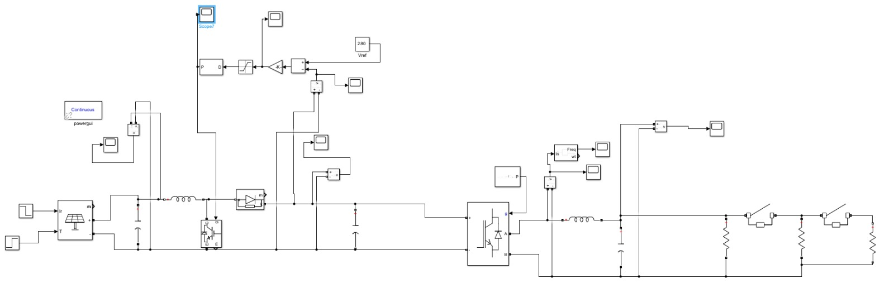

Reinforcement Learning-based Frequency Control for Renewable Energy Microgrids

Intro of PV Grid model
- This Simulink model simulates a solar power conversion system. It starts with a PV array that converts sunlight into DC electricity.
- A boost converter then steps up the voltage. After that an inverter converts DC to AC for practical use.
- Finally, the system's output is connected to a load, and its performance is monitored through voltage measurements by scopes.